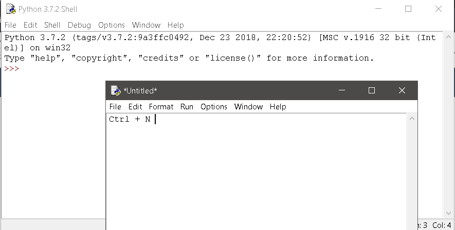
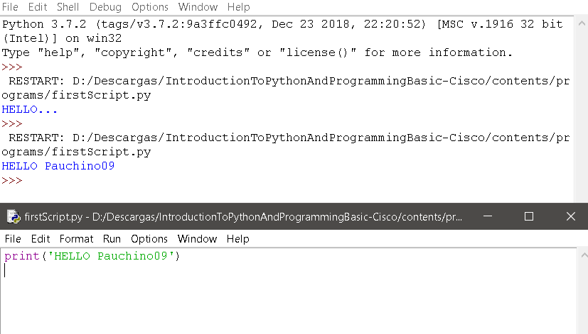
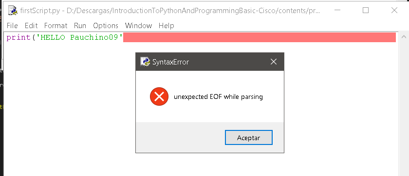

Start Python
To start Python on Windows computer, open a command line window and type python, as shown in Example 1.
How does a computer program work?
This course aims to show you what the Python language is and what it is used for. Let's start from the absolute basics. A program makes a computer usable. Without a program, a computer, even the most powerful one, is nothing more than an object. Similarly, without a player, a piano is nothing more than a wooden box. Computers are able to perform very complex tasks, but this ability is not innate. A computer's nature is quite different. It can execute only extremely simple operations, e.g., a computer cannot evaluate the value of a complicated mathematical function by itself, although this isn't beyond the realms of possibility in the near future. Contemporary computers can only evaluate the results of very fundamental operations, like adding or dividing, but they can do it very fast, and can repeat these actions virtually any number of times. Imagine that you want to know the average speed you've reached during a long journey. You know the distance, you know the time, you need the speed. A computer screen with Python logo. Naturally, the computer will be able to compute this, but the computer is not aware of such things as distance, speed or time. Therefore, it is necessary to instruct the computer to:
- accept a number representing the distance
- accept a number representing the travel time
- divide the format value by the latter and store the result in the memory
- display the result (representing the average speed) in a readable format
Natural languages vs programming languages
A language is a means (and a tool) for expressing and recording thoughts. There are many languages all around us. Some of them require neither speaking nor writing, such as body language; it's possible to express your deepest feelings very precisely without saying a word.
Another language you use each day is your mother tongue, which you use to manifest your will and to think about reality. Computers have their own language, too, called machine language, which is very rudimentary.
A computer, even the most technically sophisticated, is devoid of even a trace of intelligence. You could say that it is like a well-trained dog - it responds only to a predetermined set of known commands.
The commands it recognizes are very simple. We can imagine that the computer responds to orders like "take that number, divide by another and save the result".
A complete set of known commands is called an instruction list, sometimes abbreviated to IL. Different types of computers may vary depending on the size of their ILs, and the instructions could be completely different in different models.
Note: machine languages are developed by humans.
No computer is currently capable of creating a new language. However, that may change soon. On the other hand, people use a number of very different languages, too, but these languages developed naturally. Moreover, they are still evolving.
New words are created every day and old words disappear. These languages are called natural languages.
What makes a language?
We can say that each language (machine or natural, it doesn't matter) consists of the following elements:
An alphabet
A set of symbols used to build words of a certain language (e.g. the Latin alphabet for English, the Cyrilic alphabet for Russian, Kanji for Japanese, and so on)
A Lexis
(aka a dictionary) a set of words the language offers its users (e.g. The word "computer" comes from the English language dictionary, while "cmoptrue" doesn't; the word "chat" is present both in English and Frech dictionaries, but their meanings are different)
A syntax
A set of rules (formal or informal, written or felt intuitively) used to determine if a certain string of words forms a valid sentece (e.g. "I am a python" is a syntactically correct phrase, while "I a python am" isn't)
Semantics
A set of rules determining if a certain phrase makes sense (e.g. "I ate a doughnut " makes sense, but "A doughnut ate me" doesn`t)
The IL is, in fact, the aplhabet of a machine language. This is the simplest and most primary set of symbols we can use to give commands to a computer. It's the computer's mother tongue.Unfortunately, this tongue is a cry from a human mother lntgue. We all (both computer and humans) need something alse, a common language for computers and humans or a bridge between the two different worlds.
We need a language in which humans can write their programs and a language that computers may use to execute the programs, one that is far more complex than machine language and yet far simpler than natural language.
Such languages are often called high-level programming languages. They are least somewhat similar to natural ones in that they use symbols, words and conventions readable to humans. These languages enable humans to express commands to computers that are much more complex than those offered by ILs.
A program written in a high-level programming languages is called a source code (in contrast to the machine code executed by computers). Similarly, the file containing the source code is called the source file.
Compilation vs interpretation
Computer programming is the act of composing the selected programming language's elemets in the order that will cause the desired effect. The effect could be different in every specific case - it's up to the programmer's imagination, knowledge and experience.
Of course, such a composition has to be correct in many senses:
- Alphabetically - a program needs to be written in a recognizable script, such as Roman, Cyrillic, etc.
- Lexically - each programming language has its dictionary and you need to master it; thankfully, it's much simpler and smaller than the dictionary of any natural language.
- Syntactically - each language has its rules and they must be obeyed.
- Semantically - the program has to make sense.
Let's assume that you're sucessful written a program. How do we persuade the computer to execute it? You have to render your program into machine language. Luckily, the translation can be done by a computer itself, making the whole process fast and efficient.
There are two different ways of transforming a program from a high-level programming language into machine language:
- Compilation- the source program is translated once (however, this act must be repeated each time you modify the source code) by getting a file (e.g., an .exe file if the code is intended to be run under MS Windows) containing the machine code; now you can distribute the file worldwide; the program that performs this translation is called a compiler or translator.
- Interpretation- you (or any user of the code) can translate the source program each time it has to be run; the program performing this kind of transformation is called an interpreter, as it interprets the code every time it is intended to be executed; it also means that you cannot just distribute the source code as-is, because the end-user also needs the interpreter to execute it.
There are few languages that can be both compiled and interpreted. Usually, a programming language is projected with this factor in its constructors minds- will it be compiled or interpreted?
What does the interpreter actually do?
Let's assume once more that you have written a program. Now, it exists as a computer file: a computer program is actually a piece of text, so the source code is usually placed in text files.
Note: it has to be pure text, without any decorations like different fonts, colors, embedded images or other media. Now you have to invoke the interpreter and let it read your source file.
The interpreter reads the source code in a way that is common in Western culture: from top to bottom and from left to right. There are some exceptions - they'll be covered later in the course.
First of all, the interpreter checks if all subsequent lines are correct (using the four aspects covered earlier).
If the compiler finds an error, it finishes its work immediately. The only result in this case is an error message. The interpreter will inform you where the error is located and what caused it. However, these messages may be misleading, as the interpreter isn't able to follow your exact intentions, and may detect errors at some distance from their real causes.
For example, if you try to use an entity of an unknown name, it will cause an error, but the error will be discovered in the place where it tries to use the entity, not where the new entity's name was introduced.
In other words, the actual reason is usually located a little earlier in the code, e.g., in the place where you had to inform the interpreter that you were going to use the entity of the name.
If the line looks good, the interpreter tries to execute it (note: each line is usually executed separately, so the trio "read-check-execute" can be repeated many times - more times than the actual number of lines in the source file, as some parts of the code may be executed more than once).
It is also possible that a significant part of the code may be executed successfully before the interpreter finds an error. This is normal behavior in this execution model.
You may ask now: which is better? The "compiling" model or the "interpreting" model? There is no obvious answer. If there had been, one of these models would have ceased to exist a long time ago. Both of them have their advantages and their disadvantages.
| Compilation | Interpretation | |
| Advantages | The executation of the traslated code is usally faster, only the user has to have the compiler - the end - user may use the code without it. The traslated code is stored using machine language - as it is very hard to understand it, your own investions and programming tricks are likely to remain your secret. | You can run the code as soon as you complete it - there are no additional phases of translation, the code is stored using programming language, not the machine one - this means that ir can be run on computers using different machine languages, you don't compile your code separately for each diffrent architecture. |
| Disadvantages | The compilation itself may be a very time-consuming process - you may not be able to run your code immediately after any amendment, you have to have as many compilers as hardware platforms you want your code to be run on. | don't expect that interpretation will ramp your code to high speed - your code will share the computer's power with the interpreter, so it can't be really fast, both you and the end user have to have the interpreter to run your code. |
What is Python?
Python is a widely-used, interpreted, object-oriented, and high-level programming language with dynamic semantics, used for general-purpose programming.
And while you may know the python as a large snake, the name of the Python programming language comes from an old BBC television comedy sketch series called Monty Python's Flying Circus.
At the height of its success, the Monty Python team were performing their sketches to live audiences across the world, including at the Hollywood Bowl.
Since Monty Python is considered one of the two fundamental nutrients to a programmer (the other being pizza), Python's creator named the language in honor of the TV show.
Who created Python?
One of the amazing features of Python is the fact that it is actually one person's work. Usually, new programming languages are developed and published by large companies employing lots of professionals, and due to copyright rules, it is very hard to name any of the people involved in the project. Python is an exception.
There are not many languages whose authors are known by name. Python was created by Guido van Rossum, born in 1956 in Haarlem, the Netherlands. Of course, Guido van Rossum did not develop and evolve all the Python components himself.
The speed with which Python has spread around the world is a result of the continuous work of thousands (very often anonymous) programmers, testers, users (many of them aren't IT specialists) and enthusiasts, but it must be said that the very first idea (the seed from which Python sprouted) came to one head - Guido's.
Python goals
In 1999, Guido van Rossum defined his goals for Python:
- An easy and intuitive language just as powerful as those of the major competitors;
- Open source, so anyone can contribute to its development;
- Code that is as understandable as plain English;
- Suitable for everyday tasks, allowing for short development times.
Either way, it still occupies a high rank in the top ten of the PYPL PopularitY of Programming Language and the TIOBE Programming Community Index.
Python isn't a young language. It is mature and trustworthy. It's not a one-hit wonder. It's a bright star in the programming firmament, and time spent learning Python is a very good investment.
What makes Python special?
How does it happen that programmers, young and old, experienced and novice, want to use it? How did it happen that large companies adopted Python and implemented their flagship products using it?
There are many reasons - we've listed some of them already, but let's enumerate them again in a more practical manner:
- It's easy to learn - the time needed to learn Python is shorter than for many other languages; this means that it's possible to start the actual programming faster.
- It's easy to teach - the teaching workload is smaller than that needed by other languages; this means that the teacher can put more emphasis on general (language-independent) programming techniques, not wasting energy on exotic tricks, strange exceptions and incomprehensible rules.
- It's easy to use for writing new software - it's often possible to write code faster when using Python
- It is easy to understand - it's also often easier to understand someone else's code faster if it is written in Python
- It's easy to obtan, install and deploy - Python is free, open and multiplatform; not all languages can boast that.
It's not a speed demon - Python does not deliver exceptional performance, in some cases it may be resistant to some simpler testing techniques - this may mean that debugging Python's code can be more difficult than with other languages; fortunately, making mistakes is always harder in Python.
It should also be stated that Python is not the only solution of its kind available on the IT market.
It has lots of followers, but there are many who prefer other languages and don't even consider Python for their projects.
Python rivals?
Python has two direct competitors, with comparable properties and predispositions. These are:
- Perl- a scripting languages originally authored by Larry Wall
- Ruby- a scripting language originally authored by Yukihiro Matsumoto
In contrast, the latter is more innovative and more full of fresh ideas than Python. Python itself lies somewhere between these two creations.
The Internet is full of forums with infinite discussions on the superiority of one of these three over the others, should you wish to learn more about each of them.
Where can we see Python in action?
We see it every day and almost everywhere. It's used extensively to implement complex Internet services like search engines, cloud storage and tools, social media and so on. Whenever you use any of these services, you are actually very close to Python, although you wouldn't know it.
Many developing tools are implemented in Python. More and more everyday use applications are being written in Python. Lots of scientists have abandoned expensive proprietary tools and switched to Python. Lots of IT project testers have started using Python to carry out repeatable test procedures. The list is long.
Why not Python?
Despite Python's growing popularity, these are still some niches where Python is absent, or is rarely seen:
- low-level programmming (sometimes called "close to metal" programming) If you want to implement an extremely effective driver or graphical engine, you wouldn't use Python.
- Appplication for mobile devices although this territory is still waiting to be conquered by Python, it will most likely happen someday.
There is more Python
There are two main kinds of Python, called Python 2 and Python 3.
Python 2 is an older version of the original Python. Its development has since been intentionally stalled, although that doesn't mean that there are no updates to it. On the contrary, the updates are issued on a regular basis, but they are not intended to modify the language in any significant way.
They rather fix any freshly discovered bugs and security holes.
Python 2's development path has reached a dead end already, but Python 2 itself is still very much alive.
Python 3 is the newer ( to be precise, the current) version of the language. It's going through its own evolution path, creating its own standars and habits.
The former is more traditional, more conservative than Python, and resembles some of the good old languages derived from the classic C programming language.
These two versions of Python aren't compatible with each other. Python 2 scripts won't run in a Python 3 environment and vice versa, so if you want the old Python 2 code to be run by a Python 3 interpreter, the only possible solution is to rewrite it, not from scratch, of course,
as large parts of the code may remain untouched, but you do have to revise all the code to find all possible incompatibilities. Unfortunately, this process cannot be fully automatized.
It's too hard, too time-consuming, too expensive, and too risky to migrate an old Python 2 application to a new platform. It's possible that rewriting the code will introduce new bugs to it. It's easier and more sensible to leave these systems alone and to improve the existing
interpreter, instead of trying to work inside the already functioning source code.
Python 3 isn't just a better version of Python 2 - it is a completely different language, although it's very similar to its predecessor. When you look at them from a distance, they appear to be the same, but when you look closely, though, you notice a lot of differences.
If you're modifying an old existing Python solution, then it's highly likely that it was coded in Python 2. This is the reason why Python 2 is still in use. There are too many existing Python 2 applications to discard it altogether.
Note If you're going to start a new Python project, you should use Python 3, and this is the version of Python that will be used during this course.
It is important to remember that there may be smaller or bigger differences between subsequent Python 3 releases (e.g., Python 3.6 introduced ordered dictionary keys by default under the CPython implementation) - the good news, though, is that all the newer versions of Python 3
are backwards compatible with the previous versions of Python 3. Whenever meaningful and important, we will always try to highlight those differences in the course.
All the code samples you will find during the course have been tested against Python 3.4, Python 3.6, and Python 3.7.
Python aka CPython
In addition to Python 2 and Python 3, there is more than one version of each.
First of all, there are the Pythons which are maintained by the people gathered around the PSF (Python Software Foundation), a community that aims to develop, improve, expand, and popularize Python and its environment. The PSF's president is Guido von Rossum himself, and for this reason, these Pythons are called canonical.
They are also considered to be reference Pythons, as any other implementation of the language should follow all standards established by the PSF.
Guido van Rossum used the "C" programming language to implement the very first version of his language and this decision is still in force. All Pythons coming from the PSF are written in the "C" language. There are many reasons for this approach and it has many consequences.
One of them (probably the most important) is that thanks to it, Python may be easily ported and migrated to all platforms with the ability to compile and run "C" language programs (virtually all platforms have this feature, which opens up many expansion opportunities for Python).
This is why the PSF implementation is often referred to as CPython. This is the most influential Python among all the Pythons in the world.
Cython
Another Python family member is Cython.
Cython is one of a possible number of solutions to the most painful of Python's trait - the lack of efficiency. Large and complex mathematical calculations may be easily coded in Python (much easier than in "C" or any other traditional language), but the resulting code's execution may be extremely time-consuming.
How are these two contradictions reconciled? One solution is to write your mathematical ideas using Python, and when you're absolutely sure that your code is correct and produces valid results, you can translate it into "C". Certainly, "C" will run much faster than pure Python.
This is what Cython is intended to do - to automatically translate the Python code (clean and clear, but not too swift) into "C" code (complicated and talkative, but agile).
Jython
Another version of Python is called Jython.
"J" is for "Java". Imagine a Python written in Java instead of C. This is useful, for example, if you develop large and complex systems written entirely in Java and want to add some Python flexibility to them. The traditional CPython may be difficult to integrate into such an environment, as C and Java live in completely different worlds and don't share many common ideas.
Jython can communicate with existing Java infrastructure more effectively. This is why some projects find it usable and needful.
Note: the current Jython implementation follows Python 2 standards. There is no Jython conforming to Python 3, so far.
PyPy and RPython
Take a look at the logo below. It's a rebus. Can you solve it?
It's a logo of the PyPy - a Python within a Python. In other words, it represents a Python environment written in Python-like language named RPython (Restricted Python). It is actually a subset of Python. The source code of PyPy is not run in the interpretation manner, but is instead translated into the C programming language and then executed separately.
This is useful because if you want to test any new feature that may be (but doesn't have to be) introduced into mainstream Python implementation, it's easier to check it with PyPy than with CPython. This is why PyPy is rather a tool for people developing Python than for the rest of the users.This doesn't make PyPy any less important or less serious than CPython, of course.
In addition, PyPy is compatible with the Python 3 language.
There are many more different Pythons in the world. You'll find them if you look, but this course will focus on CPython.
How to get Python and how to get use it
There are several ways to get your own copy of Python 3, depending on the operating system you use.
Linux users most probably have Python already installed - this is the most likely scenario, as Python's infrastructure is intensively used by many Linux OS components.
For example, some distributors may couple their specific tools together with the system and many of these tools, like package managers, are often written in Python. Some parts of graphical environments available in the Linux world may use Python, too.
If you're a Linux user, open the terminal/console, and type:
python3
At the shell prompt, press Enter and wait.
Then you don't have to do anything else.
If Python 3 is absent, then refert to your Linux documentation in orfer to find how to use your packege manager to download and install a new package - the one need is named python3 or its name negins with that. All non-Linux users can dowload a coy at
Home page Python
Starting your work with Python
Now that you have Python 3 installed, it's time to check if it works and make the very first use of it.
This will be a very simple procedure, but it should be enough to convince you that the Python environment is complete and functional.
There are many ways of utilizing Python, especially if you're going to be a Python developer.
To start your work, you need the following tools:
- An editor wich will support you in writing the code (it should have some special features, not available in simple tools), this dedicated will editor will give you more than the standard OS equipment.
- A console in wich you can launch your newly written code and stop it forcibly when it gets out of control.
- A tool named debugger, able to launch your code step by step and allowing you to inspect it at each moment of execution.
IDLE is an acronym: Integrated Development and Learning Enviromnment.
Navigate through your OS menus, find IDLE somewhere under Python 3.x and launch it. This is what you should see:
How to write and run your very first program
It is now time to write and run your first Python 3 program. It will be very simple, for now.
The first step is to create a new source file and fill it with code. Click File in the IDLE’s menu and choose New file. As you can see, IDLE opens a new window for you. You can use it to write and amend your code.
This is the editor window. Its only purpose is to be a workplace in which your source code is treated. Do not confuse the editor window with the shell window. They perform different functions.

Click File (in the new window), then click Save as..., select a folder for the new file (the desktop is a good place for your first programming attempts) and choose a name for the new file.
Note: Don't set any extension for the file name you are going to use. Python needs its files to have the .py extension, so you should rely on the dialog window's defaults. Using the standard .py extension enables the OS to properly open these files.
How to write and run your first program
Now put just one line into your newly opened and named editor window. The line looks like this:
print('HELLO...')
Take a closer look at the quotation marks. These are the simplest form of quotation marks (neutral, straight, dumb, etc.) commonly used in source files. Do not try to use typographic quotes (curved, curly, smart, etc.), used by advanced text processors, as Python doesn’t accept them.
If everything goes okay and there are no mistakes in the code, the console window will show you the effects caused by running the program.
In this case, the program hisses.
Try to run it once again, And once more, now close both windows now and return to the desktop.
How to spoil and fix your code
Now start IDLE again. Click File, Open, point the file you saved previously and let IDLE read it in. Try to run it again by pressing F5 when the editor window is active.

As you can see, IDLE is able to save your code and retrieve it when you need it again. IDLE contains one additional and helpful feature. First, remove the closing parenthesis. Then enter the parenthesis again.
Every time you put the closing parenthesis in your program, IDLE will show the part of the text limited with a pair of corresponding parentheses. This helps you to remember to place them in pairs.
Remove the closing parenthesis again. The code becomes erroneous. It contains a syntax error now. IDLE should not let you run it.
Try to run the program again. IDLE will remind you to save the modified file. Follow the instructions.
Watch all the windows carefully. A new window appears – it says that the interpreter has encountered an EOF (end-of-file) although (in its opinion) the code should contain some more text. The editor window shows clearly where it happened.

Fix the code now. It shoul look like this:
print("HELLO...")
Let's spoil the code one more time. Remove one letter from the word
print. Run the code by pressing F5. As you can see, Python is not able to recognize the error.
You may have noticed that the error message generated for the previous error is quite different from the first one, this's because the nature of the error is different and the error is discovered at a different stage of interpretation.
The editor windows will not provide any useful information regarding the error, but the console windows might.
The message (in red ) shows (in the subsequent lines):
- the traceback (which is the path that the code traverses through different parts of the program - you can ignore it for now, as it is empty in such a simple code).
- the location of the error (the name of the file containing the error, line number and module name); note: the number may be misleading, as Python usually shows the place where it first notices the effects of the error, not necessarily the error itself.
- the content of the erroneous line; note: IDLE’s editor window doesn’t show line numbers, but it displays the current cursor location at the bottom-right corner, use it to locate the erroneous line in a long source code. the name of the error and a short explanation.
roar!, meow or even maybe an oink!. Try to spoil and fix your code - see what happens. 
Sandbox
Sandbox allow Python code be run in an Internet browser. The Sandbox interface consists of three main parts:
- the Editor window, which lets you type in your code.
- the Console window, which lets you see the output of your programs.
- a tool named the Action Buttons bar, which lets you run your code, refresh the editor window, download your program as a .py file, upload a .py file that will be displayed in the editor, report a bug (in case you spot anything wrong, do let us know about it!)
- and the Settings button, which lets you adjust display settings and switch between Python/C/C++ environments.
print("Hello!")
print("Welcome to Python Essentials!")
print("THIS IS SANDBOX MODE.")